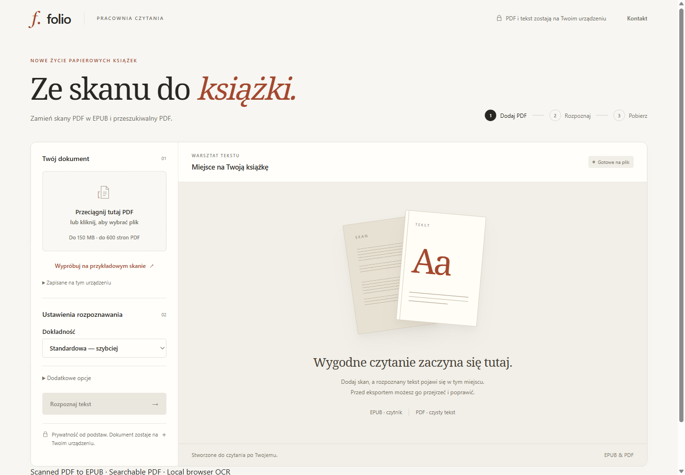

Put AI to work.
Identify a useful workflow, build a focused pilot and integrate it with your systems — with evaluation and human review where it matters.
SENIOR SOFTWARE ENGINEER & PRODUCT BUILDER
I help companies put AI to work, replace manual processes with dedicated tools and turn promising prototypes into reliable products.
AI implementation · Custom software · Prototype to production
01 / PROBLEMS I SOLVE
Your team knows where the friction is.
Let’s turn that into something that works.
People are doing the work your systems should do.
Spreadsheets, emails, repeated data entry and an essential process held together by workarounds.You want to use AI, but need more than a demo.
Which workflow is worth improving? What data can it use? Who checks the result? How does it fit the business?You have a prototype. It isn’t ready for real users.
An AI-built app or proof of concept still needs sound architecture, integrations, security and a dependable deployment.Off-the-shelf tools don’t fit the way you operate.
You need an internal application that connects your people, documents and existing systems.02 / WHAT YOU CAN HIRE ME FOR
I work directly with founders and operational teams: understand the work, build alongside the people using it, and take it into production.
Identify a useful workflow, build a focused pilot and integrate it with your systems — with evaluation and human review where it matters.
Replace manual back-office steps, spreadsheets and disconnected tools with dedicated applications and automation.
Turn an early demo, AI-built app or MVP into software you can run: review the code, fix weak points, connect services and deploy it.
WHAT THIS LOOKS LIKE
03 / SELECTED WORK
Business-critical engineering, applied AI and a product built and launched end-to-end.

FOLIO / LIVE PRODUCTFrom scanned pages to a book you can actually read.
Built end-to-end
UX · PDF processing · OCR · Payments · Deployment · Analytics · Acquisition
Business-critical engineering and work on implementing AI solutions.
Role described at a high level only. No internal architecture, AI use cases, customer data or performance metrics are disclosed.
Consumer product thinking, mobile UX and the reasons people come back.
For document-heavy and manual operations: a focused pilot that can become a working internal tool.
Folio shows the real public product. Professional experience is described without confidential details.
04 / HOW I WORK
I don’t stop at recommendations or architecture diagrams. I design systems, write production code and work through the details of making software usable.
Map the process and constraints. Agree what improvement would matter and what a first release should prove.
A short feedback loop, real examples and practical decisions about data, integrations and human oversight.
A dependable deployment, clear ownership, documentation and a sensible path for maintenance and further work.

05 / ABOUT KRZYSZTOF
I’m Krzysztof — Chris for short. Senior software engineer and product builder.
My background spans aerospace engineering, more than a decade in software and business-critical fintech systems. I’m comfortable with complexity — and focused on making it manageable.
Building my own products keeps me close to the customer problem, the experience and the practical work of launching something useful.
Java · Spring · TypeScript · React · PostgreSQL · Distributed systems · Cloud · AI/LLM integration
06 / LET’S TALK
Bring the process, the prototype or the problem.
We can start with a 20-minute conversation about what is manual, inefficient or difficult — and whether AI, custom software or a simpler process could help.
You don’t need a specification. A concrete example is enough.
Email me a short description and a few times that work for you.
krzysztof.pietrowicz@gmail.com